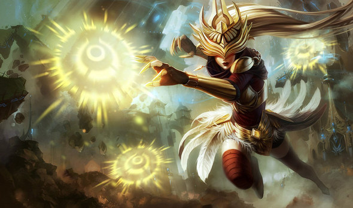
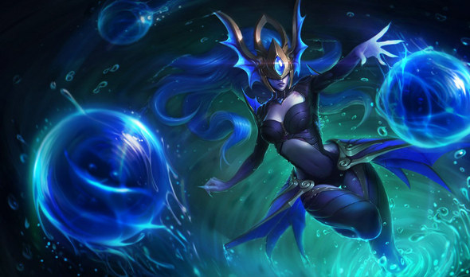
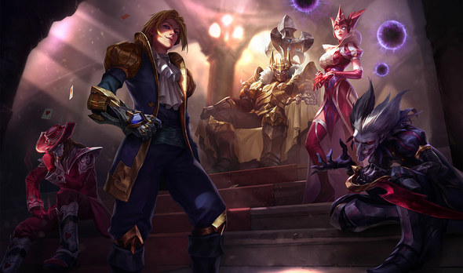
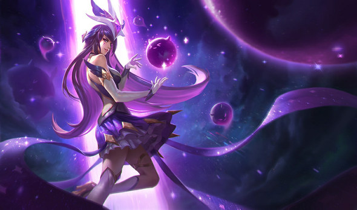
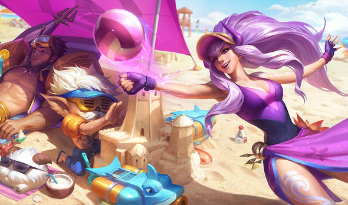
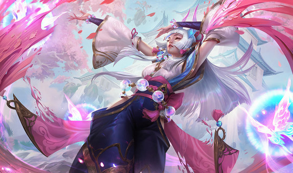
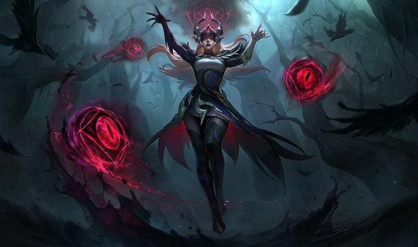
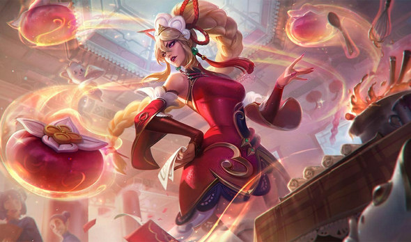
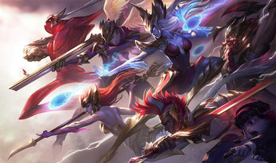

Cumplelolero · 9 sep 2012 — 2026
SYNDRA14 AÑOS
La Soberana Oscura
Mid · Maga · Ionia
El dato más simple de todos
«SYNDRA»
DESTRUCCIÓN
Eso quiere decir su nombre en ionio. Literalmente le pusieron así.
El lore más triste de la serie
Una niña castigada
por tener demasiado poder
1
Nació en un pueblo chico de Ionia
2
Era distraída y sus papás la castigaban seguido
3
Cada vez que la castigaban se iba a su escondite secreto: el Sauce Espectral
4
Ahí, metida entre las raíces, le contaba sus penas al árbol
Un árbol al que le contaba lo que no podía contarle a nadie más. Ese era todo su refugio.
Hasta que la encontraron
Le tiraron lodo
y la hicieron sangrar
Y ahí explotó
por primera vez
por primera vez
1
Le aparecieron tres orbes alrededor y el sauce se marchitó completo
2
El pueblo entero dependía de ese árbol para su magia
3
Culparon a su familia y los exiliaron a todos
Y sus papás la dejaron ahí
Su poder estaba bajando
en vez de crecer
1
Vagaron por Ionia hasta una escuela de magia especializada en domar magia salvaje
2
Pasó años estudiando, hasta que notó que su poder disminuía
3
Encaró a su maestro y él le confesó que se los había sellado a escondidas
Porque le pareció que
tenía demasiados
tenía demasiados
Syndra explotó otra vez. Y lo mató.
Y esta es la parte más cruel
La condenaron a
un sueño en bucle
El sueño era exactamente
el momento en que la humillaron de niña
el momento en que la humillaron de niña
La dejaron viviendo eso una y otra vez durante años.
Antes de eso arrasó la isla completa, y el Espíritu de Ionia la encerró en un estanque mágico por romper el equilibrio de la naturaleza.
Y ahora agárrense
Mañana le meten
un nerfeo
PARCHE 26.18
Las esferas
Le suben el maná
La W
Le suben el cooldown
Riot le está haciendo
lo mismo que el maestro
lo mismo que el maestro
Quitarle poder porque tiene demasiado.
El one trick #1 del mundo
HUGH AKSTON
#NA1
Norteamérica · Master 130 LP · top 0,58% del servidor · 85% mid
Él
14 328 495
puntos de maestría
El segundo del mundo
7 916 519
puntos de maestría
1,81×
le saca casi el doble
Es el dominio más aplastante de su propio ranking en toda la serie.
#4
LAS
Y el dato que nos toca: el cuarto mejor Syndra del mundo es del servidor del sur.
Las skins
13 skins, y 9 a la venta

Justiciera
Atlante
Reina de Diamantes
Guardiana Estelar
Veraniega Rosa Marchita
Rosa Marchita

Flor Espiritual
Aquelarre
Monerías Dumplinescas~83 USD
las nueve · 10 800 RP · 5,1 días de salario

Pero la buena está en la bóveda
Cuando SKT ganó el mundial de 2016, Faker eligió a Syndra para su colección.
Catorce años de la Soberana Oscura
Feliz cumpleaños,
Syndra
GIGI EASY
Tírenme un follow o les voy a meter la cuarta. Chao.